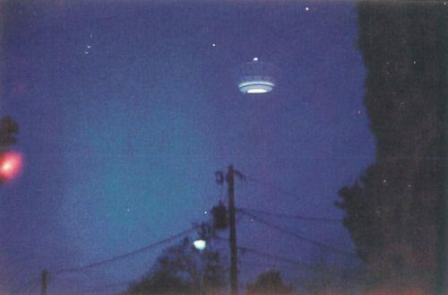
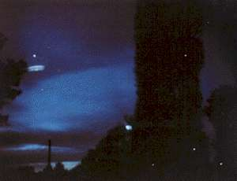
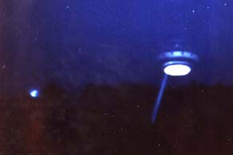

|  |  |
Le 11 novembre 1987
vers 17:00, à Gulf Breeze (Pensacola, Floride), Walters se trouve seul avec son fils
dans la maison familiale. Walters, seul
dans son bureau, voit par la fenêtre un ovni se déplacer derrière les pins de l'autre côté
de la rue. Il s'empare d'un Polaroïd et prend plusieurs instantanés.
Se précipitant dans la rue pour en prendre d'autres, il est "frappé"
par un rayon de lumière bleue et immobilisé. Il y a une forte
odeur de cannelle et ses pieds commençent à quitter le sol. Il
entend une voix dans sa tête lui dire : Nous ne vous ferons aucun
mal.
Lorsque Walters persiste à
résister, son esprit est
rempli d'images de chiens. La lumière n'est plus là et il retombe
sur le sol. L'ovni, qui mesurait environ 3,50 m de diamètre et 2,70 m
de hauteur, muni en-dessous d'un anneau de propulsion
vivement
éclairé, a disparu Walters, E. & Walters, Frances: The Gulf Breeze Sightings - The Most Astounding Multiple Sightings of Ufos in U.S. History, William Morrow & Co, mars 1990.
Le 17, Walters présente les 5 photographies à Duane Cook. Les 1ère et 5ème photographies de cette série, avec une lettre du photographe appelé "Mr. X.", sont reproduites dans le journal The Sentinel, 19 novembre 1987.
|
Waters raconte que le 2 décembre à 03:30, il
est réveillé par des aboiements de son chien. Il aurait alors remonté le store de la chambre pour voir ce petit
être blindé qui se tenait juste de l'autre côté de la vitre, me regardant dans les yeux.
 |
Le 12 janvier 1988 à 17:45, Walters est sur la route 191-B dans sa camionnette à plateau et rencontre par hasard un ovni en vol stationnaire au-dessus de la route. Il le photographie. Cette fois, un rayon de lumière blanche paralyse Walters alors qu'il se cache sous sa camionnette. Des êtres sortent de l'ovni et se dirigent vers le véhicule, mais Walters réussit à remonter dedans et à prendre la fuite.
|  |
Le 7 février un ovni rend à nouveau visite à la demeure des Walters et Frances (l'épouse de Ed) manque de peu d'être "frappée" par un rayon bleu — un événement qu'Ed s'arrangera pour fixer sur pellicule.
Le 1er mai à 01:10, Walters prend sa 39eme photo d'ovni lorsqu'il est entouré d'une lumière blanche et s'évanouit. A 02:25, il revient à lui, se demandant s'il a pas été enlevé durant ce temps et si l'implant qui l'avertissait qu'un ovni s'approchait ne lui a pas été retiré.
En fin d'année, Richard Hall et Willy Smith appellent à un point de vue plus sceptique sur l'affaire Hall, R. & Smith, W.: "Balancing the Scale: Unanswered Questions About Gulf Breeze", MUFON UFO Journal n° 248, décembre 1988, en attendant que des réponses soient apportées à plusieurs points suspects comme la proximité des témoignages de Walters et du récit unique de Whitley Strieber, paru quelques mois plus tôt. Smith dénonce les photos de Walters comme étant des double-expositions Smith, W.: "Statement of Position", 7 août 1989. Il est exclu du MUFON dont un autre membre, Bruce Maccabee, répète que les photos n'ont pu être truquées Maccabee, B. S.: "Bubba comes to Gulf Breeze", 13 novembre 2000.
Le lundi 8 janvier 1990, Walters fait une autre observation, à laquelle il convie d'autres amis "UFO Photographed - Then followed by helicopters", Gulf Breeze Sentinel, 11 janvier 1990 Maccabee, B., S.: "Gulf Breeze: January 8, 1990 'Not just another evening stroll", c 1990, 2000.
En mai 1990, Craig Myers reprend l'enquête Printy, Tim: "Startling revelations: June-July 1990", octobre 2008 :
Rapidement je reprenais mes recherches sur le terrain, laissant de côté pour un moment les théories et les
conjectures. Je décidais de reprendre la piste là où elle semblait la plus proche, chez une des anciennes maisons de
Ed. En tant qu'entrepreneur il avait construit plusieurs maisons dans la région, vécu dedans pendant quelques mois
pendant qu'il en construisait une autre, puis avait déménagé. A la mi-mai, je commençais à visiter certaines de ces
maisons dans la zone de Milton, en espérant trouver quelque chose que notre photographe éhonté aurait laissé
derrière lui… Je commençais à demander aux nouveaux occupants s'ils avaient trouvé quelque chose d'inhabituel
quand ils avaient emménagé, comme des livres sur les ovnis, des photos d'ovnis, des chambres noires, des maquettes
d'ovnis, et pourquoi pas, même de vrais ovnis.
Myers finit par arriver à la maison occupée par Walters à l'époque où furent relayés les histoires d'ovnis racontées dans son livre. Myers explique l'objectif de sa visite aux nouveaux occupants, Robert et Sarah Menzer, qui ont racheté sa moins de 1 an après son départ :
Myers : Notre journal fait une série d'articles sur les observations et les photographies de Ed à
cause de la notoriété qu'est en train d'acquérir cette région dans tout le pays et même dans le monde.
(...) Ed
a écrit un livre et va dans toutes les émissions à la télévision. Il est devenu un personnage public, une sorte de
célébrité.
(...) Je viens par ici parce que, comme je l'ai dit, cette maison est l'endroit où Ed et Frances
ont dit avoir pris plusieurs de ces photos en 1987 et 1988,
(...) Eh bien, on se demande juste si vous auriez
peut-être trouvé ou vu quelque chose d'inhabituel depuis que vous avez emménagé ?
Robert Menzer : Trouvé quelque chose ? Comme quoi ?
Myers (plaisantant à moitié) : Eh bien, d'abord, pourquoi pas un ovni ?
Robert Menzer (pouffant) : Non, je ne peux pas dire que nous en ayons
.
Myers : Ok. Et des photographies qui trainent ?
 |
 |
Robert Menzer : Non.
Myers : Des livres sur les ovnis, la photographie, les phénomènes inexpliqués ?
Robert Menzer : Je ne peux pas dire que nous en ayons.
Myers : Des maquettes d'ovnis… ?
Sarah Menzer (après un silence et avoir regardé son mari) : Eh bien, on a trouvé quelque chose
l'autre jour... Je vais le chercher.
(...) Nous l'avons trouvé il y a quelques semaines
.
Myers : Je peux le voir ?
Ce qui ressemble au premier abord à une pile de plaques de polystyrène ressemble en fait en tout point et vu de près à l'ovni de Gulf Breeze.
Myers publie sa découverte Myers, Craig: "Gulf Breeze UFO model found", Pensacola News Journal, 10 juin 1990 puis, une semaine plus tard, qu'un jeune de Gulf Breeze (par la suite identifié comme Tommy Smith), avait aidé Walters a faire ses fausses photos d'ovnis.
Un certain Tommy Smith fait son apparition, prétendant que Walters lui a demandé d'apporter de fausses photos d'ovnis qu'il a réalisées au journal Sentinel, en prétendant qu'elles étaient vraies.
Le 15 juin 1990, Smith est interrogé par téléphone par le maire de Gulf Breeze, Ed Gray ; le chef de la Police de Gulf Breeze, Jerry Brown ; le journaliste du Pensacola News Journal, Craig Myers ; et le journaliste de Channel 3 TV, Mark Curtis. L'interview et le témoignage unsworn furent transcris par le Court Reporter, Chris Morrow. Cette interview est à la base d'un article du News Journal le 17 juin.
Dans cette interview, Smith fournit des explications à nombre des photographies et événements autour de Walters. Il déclare que Walters lui a parlé de toute l'histoire et a répondu à ses questions sur la manière dont diverses photos furent prises.
Le 19 juin, Charles Flannigan (directeur d'Etat du MUFON pour la Floride) annonce que le MUFON réouvre le cas de Walters pour enquêter sur ces nouvelles allégations. Il affecte alors des Directeurs de Section d'Etat, Rex et Carol Salisberry, pour l'aider dans cette enquête. La nouvelle est relayée à la conférence annuelle du MUFON des 7-8 juillet.
Les Salisberry concluent que certaines photos de Walters, si ce ne sont toutes, sont probablement des canulars Salisberry, Carol A. & Rex C.: Interim Report on the reopening of the Walters' UFO Case, 23 septembre 1990 < Myers, Craig: "Investigators Doubt UFO Author", Pensacola News Journal, samedi 27 octobre 1990. Leur rapport sera cependant contesté au sein du MUFON (par Dan Wright, Directeur Adjoint des Enquêtes) et Gary Watson (Enquêteur-en-Chef de l'organisation pour les comtés d'Escambia et de Santa Rosa) est affecté à une contre-enquête. Après d'autres observations collectives Morrison, Ann: "'There it is!'" Gulf Breeze Sentinel, 25 avril 1991, Watson remet sa conclusion le 23 mai 1991, soutenant le témoignage de Walters Hufford, Art: "Ed Walters, the Model and Tommy Smith", MUFON Journal n° 297, janvier 1993.
Entretemps, surviendra l'affaire des "6 de Gulf Breeze".
 |
Le 12 janvier 1994, vers 10:20 CST, Walters photographie un chasseur et un ovni au même moment. Il en avertit Bruce Maccabee le lendemain Maccabee, B. S.: "UFOs are real and the Air Force knows it - The F15/UFO photos of Ed Walters", 1994.